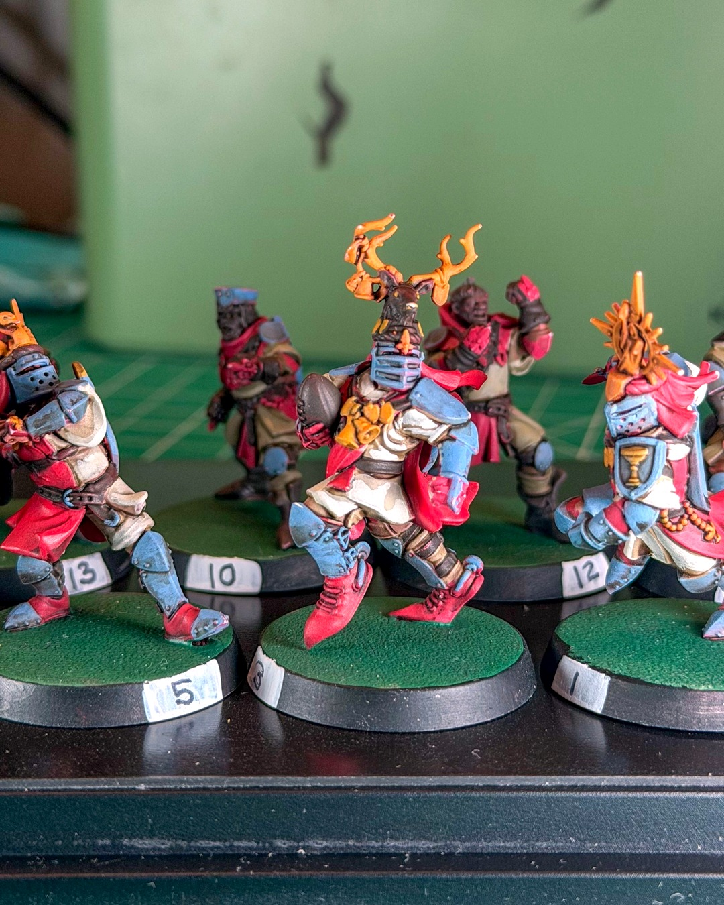
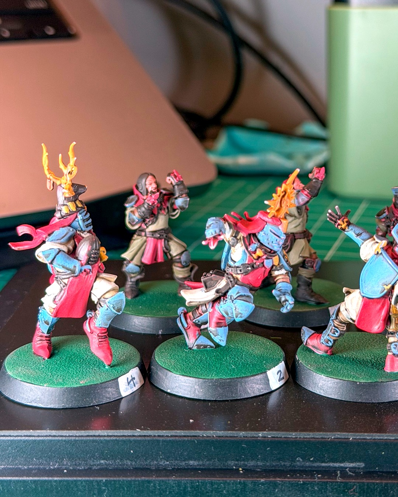
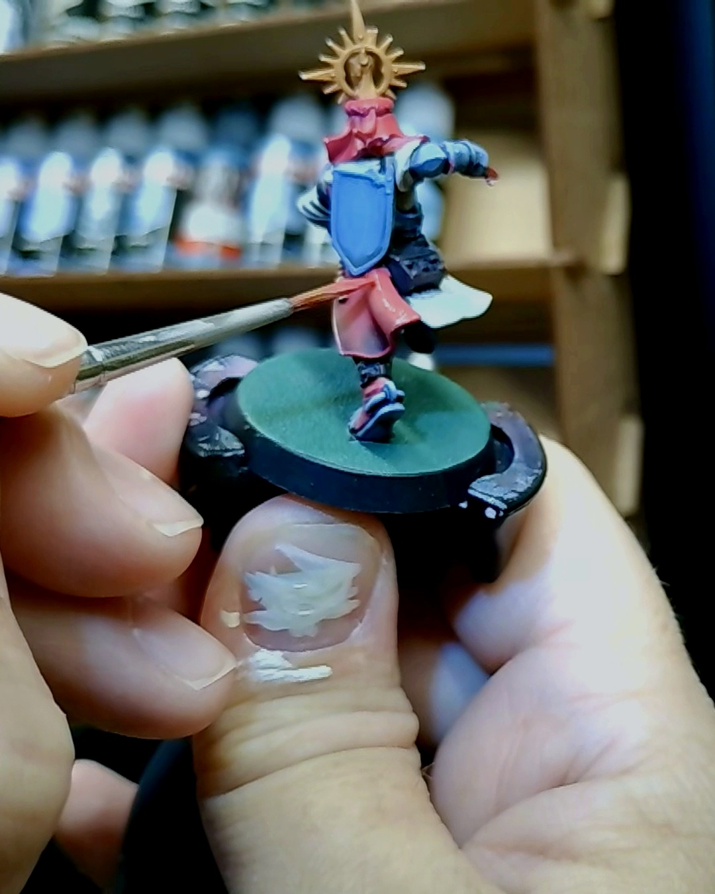
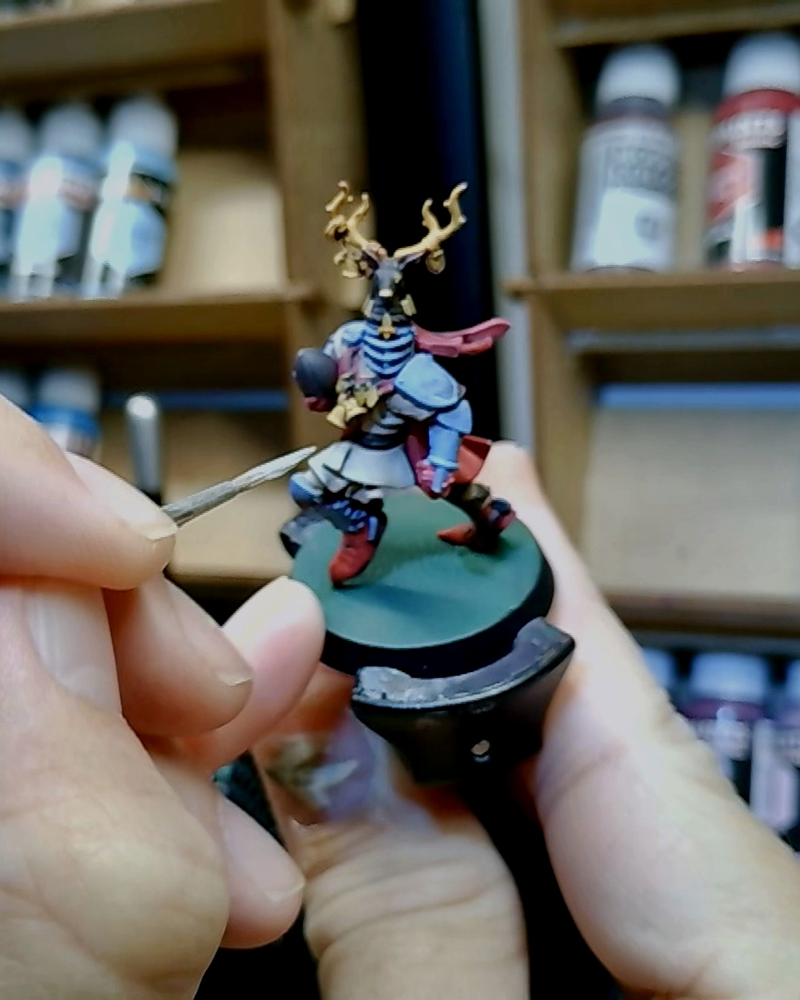

Highlight night on the Grenadiers
Gold halos, antler crests and a whole lot of slate blue armor. The Holy Hand Grenadiers are starting to look like a real team. 🦌
This was a highlight night on the knights. The brush shots are from mid-session, working edges up on the armor and capes. The bases are green with numbers on the rims now, but they're still not finished.
Still a WIP, but they look a lot better getting flattened in team colors than they did in grey.
The station behind them is my Krydrufi (15% off with code lefthanded), and the brushes are da Vinci Maestro Kolinskys. Both links are in my bio, and they're affiliate links, so grabbing gear through them keeps this team in paint 🙌
@warhammerofficial @krydrufi
#miniaturepainting #bloodbowl #bretonnian #warhammercommunity #wip
Gear in this post
- Krydrufi V1 2.0 modular painting station also on AmazonThe modular painting kit that lets me paint at the kitchen table, with brush cleaner and holders built in15% off at Krydrufi with code lefthanded
- Kolinsky sable miniature brushesFuumuui 5-pack, sizes 00000 to 3
- da Vinci Maestro Series 35 Kolinsky sable brushMy daily drivers in sizes 0, 1 and 3 (link is size 1)
Affiliate links. All gear